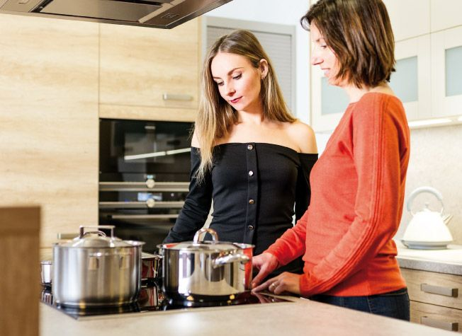
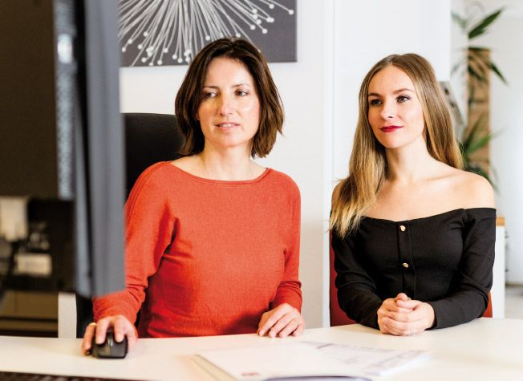
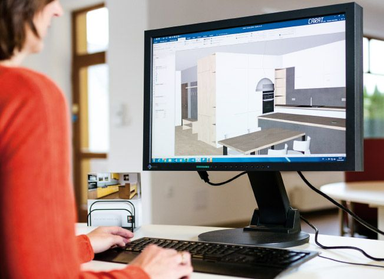
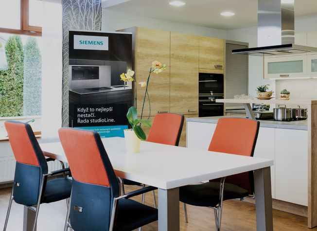
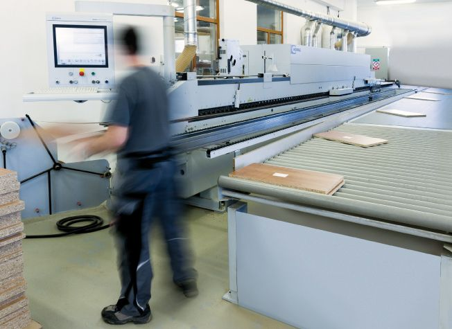
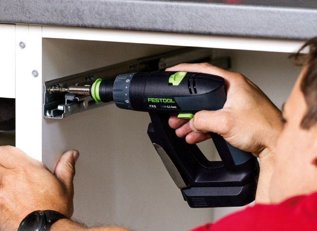
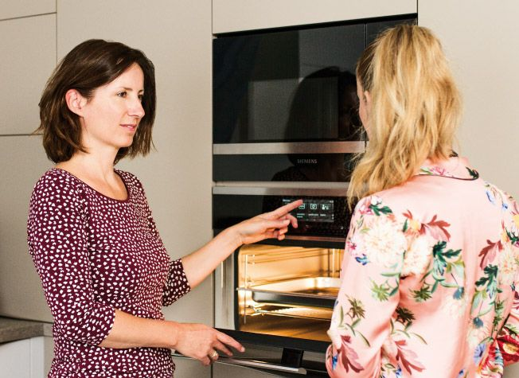

Prohlídka studia
Ve studiu stojí celá řada vystavených kuchyní i s funkčními vestavnými spotřebiči. Ukážeme vám dispozice, materiály a různé mechanismy otvírání. Na místě si můžete domluvit schůzku.
„Vzhledem k omezené velikosti místností byl totiž důležitý každý detail. Spousta vychytávek a možností na vystavených modelech nás nadchla.“
Zuzka, recenze na Googlu

Konzultace
Projdeme vaši představu, ukážeme vzorníky materiálů a poradíme s výběrem. Probereme i technické řešení: kování, materiály a detaily.

Zaměření a 3D návrh
Domluvíme zaměření u vás doma. Pak připravíme technické výkresy pro výrobu a 3D vizualizaci. Pošleme je e-mailem, nebo je spolu projdeme a upravíme na schůzce.

Cenová nabídka
Když výkresy odsouhlasíte, připravíme cenovou nabídku, případně ve variantách, na kterých jsme se domluvili. Podepsaná nabídka jde spolu s výkresy do výroby.

Výroba v naší dílně
Technik výroby připraví z výkresů data pro CNC stroje HOMAG. Hotové díly i příslušenství pak dílna připraví k expedici.

Dodávka a montáž
V termínu, který si domluvíte s prodejcem, přijedou naši montéři a kuchyň odborně smontují.
„Mile nás překvapil i fakt, že během realizace rozestavěného bytu bylo po každém dni uklizeno a čisto.“
Zuzka, recenze na Googlu

Spotřebiče
Spotřebiče objednáme za vás a ve studiu poradíme, který se vám hodí. Namontujeme je, zapojíme a ukážeme, jak se ovládají. Ve studiu najdete mimo jiné Siemens včetně řady studioLine, Miele, Electrolux a Liebherr.
„Dnes s odstupem času musím ocenit snadnou údržbu i moderní spotřebiče, které bych sama určitě nevybrala.“
Dana, recenze na Googlu